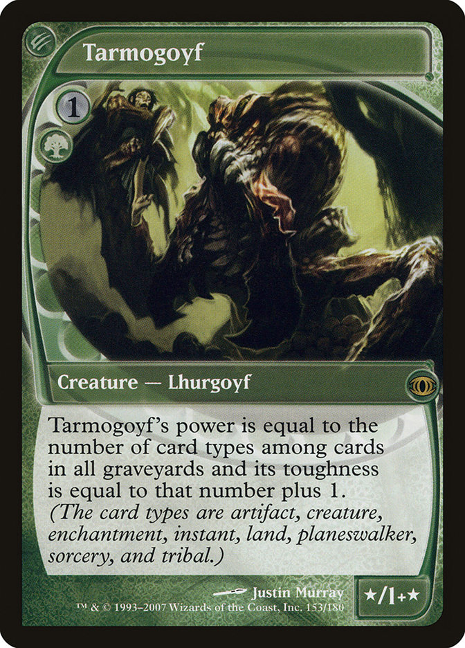

作者：多明尼亚世界 Sylvain
原文地址：http://www.mtgchina.net/bbs/forum.php?mod=viewthread&tid=226783&extra=page%3D1&page=1
【试作品，供2008年以后的新人熟悉标准环境的历史。有几个环境个人不是很熟，届时我会指出，并请各位一直留在圈内到今日的同好指教。】
每逢新系列发售，标准赛环境都会发生巨大变化。有的单卡依靠自己或者新机制的力量成为某种套牌的核心，甚至定义整个环境，这种单卡就是标志性单卡，或者叫staple。WWK的心灵塑师杰斯、锻石秘教徒，M11的太古泰坦就是现环境的staple，它们是套牌里存在某种颜色法术力的根本原因。
要成为staple，首先要有相对IMBA的单卡质量。这里的相对是指当时环境的牌池：在不同赛制，每个颜色都有自己的staple。牌池相似的赛制，对应的staple也会相似，而牌池越大，要成为staple就越难。Vintage和Legacy牌池巨大、相似而且相对稳定，他们的staple也十分接近。相反，标准赛的牌池每年都在变化，它的staple自然也会不断变化。
当然也有单卡质量一般但仍然成为staple的牌，如充盈、，这些牌通常是combo组件。在环境中恰好没有合适的应对手段，这些组合就显得极具威胁——而这种威胁的后果就是直接进入黑名单，就好象几年前的黯窑门徒和神器地。
大战役-七版-奥德赛
奥德赛发售时间是2001年9月，作为整十年前第一个大系列，从它开始看上去十分合理。奥德赛的发售意味着马凯迪亚退出标准环境，这也是蓝色最后一次表现出对环境的绝对支配力。至此之后，蓝色作为辅助色，一直衰落了很多年。
每次环境更替，最先冒出头的都是快攻套牌。这次新系列为他们带来一条伟大的狗：
野杂种狗
野狗和大象在价格上是两个极端，但在地位上却一点不差。两费二攻自带膨胀和变色，生物战中tempo优势明显，而且直接废掉环境内几乎所有点杀（除了终结），红色要杀狗至少二换一，由于费用低廉，蓝色回手也显得效率低下。更重要的是，野狗的无法术力费用弃牌成为环境里两个最重要机制：门槛和疯魔的发动机，在以野狗作为引擎的基础上直接产生了后来的疯魔和门槛套牌及其各种变种。在野狗之前，从来没有这么低费的绿色生物能够同时充当打手和引擎并具有这样强大的生存能力。如果不是下面那位的同志挡路，当时的蓝色玩家可能连使FOF的机会都没有。
野狗真正冒出头其实是在绝境发售后。在这之前，生物套牌一直被一只三费生物压得抬不起头来，因为这个生物的头实在有点……大：
灵能阿托格
费用低廉、难以去除、爆发力强，灵能阿托格是十年来蓝色套牌最好的终结者没有之一，对生物套牌的威胁大到近乎无耻。当时世界冠军赛八强有六套是阿托格，可见这个色组的支配力之强直到秘罗地之前都绝无仅有。
无可否认，保护灵能阿托格需要大量手牌，但是当时的蓝色有真伪莫辨，他们的组合赢下了无数比赛。
在IN所有分堆牌中，只有FOF值得仔细研究。只需要4费就能迅速挖掘牌库补充手牌，而掉坟场的效应在门槛满天飞的环境里也不算什么副作用。其实FOF早在IN发售的时候就已经成为各种环境蓝色的常客，所以放在这里并不是很合适。当时蓝色值得一提的是另一张法术：
动荡
动荡的发行令蓝色有了和白色（WOG）、红色（大洪水）一样重置台面的能力，而外国人很快就为动荡找到了好朋友：灵俑侵扰。动荡和侵扰的组合就是当时一切蓝黑套牌的原型。动荡作为winning condition最大的特点是能同时获得tempo的优势，这甚至连古灵精怪都无法做到。蓝色玩家就算被打剩最后几点血也能安心使出动荡而不必担心因对手持续的攻势而没有足够时间取胜。因为只要动荡一结算，对手就只能被迫进入防守的状态了。最早的蓝黑用了渗透影法术师，但很快人们发现渗透影生存能力太弱，尤其是无法挡住成群的大象让人忍无可忍，之后便很快被灵能阿托格和夜景院佣兽的搭配取代，进而演变成灵能阿托格-动荡的搭配；甚至到后来，连动荡都不需要了…
大头“杀不掉”的头衔保持了很长时间，直到绝境发售。这个空前绝后的子系列带来一张令灵能阿托格的生存能力大幅下降的牌：
崔纳的勒令
黑色的“消灭”效应一直有不杀黑色生物的传统，哪怕是在绝境这种黑色一面倒的环境中也是一样。崔纳勒令的发行并没有打破这个传统，但却让阿托格不再那么难杀。霎时间崔纳的勒令洛阳纸贵，阿托格的生存空间大幅缩小。而奇怪的是，生物套牌的环境并没有因为阿托格的生存空间大幅减少而变好。因为在为绿色带来零费3/3三费4/4外加抓牌和康的同时，绝境还带来另一位好朋友：
柯帮金库/cabal coffers
金库提供大量法术力，这是当时纯黑生存的基础。勒令、残肢毁伤、腐化、焚魂还有螳人阴魂，纯黑在打压生物套牌方面的能力并不比蓝黑差，何况当时还有逼从、昏乱和回声萦绕。
自此之后这个标准赛就是各种蓝绿、纯黑和蓝黑的天下。即使后来神谴的发售，强如柯帮疗法和黠智祈愿，也没有改变三种套牌支配标准赛的事实，只是为他们带来补强而已。大战役-七版-奥德赛是十分失败的标准环境，竞技层面的套牌选择余地非常小而且十分沉闷毫无乐趣；但这段时期接近国内MTG发展的黄金时期，在这段时间进入的人不少至今还留在圈子里（再之前的老妖怪多数都忙生活了）。
奥德赛-八版-石破天惊
石破天惊的发售对上一个标准环境的部分主流是一个灾难。蓝黑失去反击咒语、真伪莫辨，连伏流都没有了，一下就没有了大部分优势，得到的补偿是找地地；黑控没有腐化、焚魂等身兼去除、致胜和tempo于一身的卡，金库带来的法术力优势也因为失去焚魂而无法体现，同时还送走了逼从、昏乱等干扰手段。不仅如此，他们还多了个共同敌人：精灵监军
精灵监军/goblin piledriver
监军提供巨大的攻击力，这改变了精灵靠数量取胜的传统；而当时更重要的似乎是，它反蓝……这就直接撕破了蓝黑的防线。作为常驻打手，时至今日还能在各种环境的精灵套里面见到这家伙。
但精灵要真正登顶还要到Scourge。ONS最具标志性的单卡是找地地牌组：
风袭荒地、繁茂丘陵、潮没水滨、聚污三角洲、血斑泥沼
七版的推出带走冰雪痛地之后，这些找地地逐渐成为多色玩家调色的首选。但他们的主要价值并不在标准赛——vintage和legacy（当时还没叫这个名字，都叫T1和T1.5）中广泛存在的dual lands才是它们身价暴涨的原因。但即使没有dual lands，他们也因为兼有压缩牌库和调色的功能而被广泛应用，到现在为止也是合法赛制里出镜率最高的地之一（基本地除外）。
除此之外还有昂扬天使（exalted angel）。个人觉得这是个很直白的生物。系命异能在race时的tempo优势非常巨大，配合丰满的身材和低廉的费用，令当时人人都爱用这位大姐。从这张卡开始白色也渐渐重回舞台：星幽滑移（astral slide）和循环机制为白色提供了持续控场的手段，在这个基础上逐渐形成后来的循环套牌。
但ONS的冲击也仅限到此。尽管削弱了部分现有主流，ONS本身却没有带来足够强力的机制和新单卡去冲击旧标准赛，即使是循环，现在也只是二线套牌而已。Morph对标准赛而言毫无意义，到现在为止也是最没有建设性的机制。新系列的故事线是种族的兴起，而除了后来的精灵，没有一套种族套能成功在T2冲出重围。失去蓝的打压其他控制套开始渐露头角，如余韵，后来还成为当年柏林世冠的冠军；而标准环境的绝对主流还是蓝绿：蓝绿拥有以前的一切，还很便宜。
之后Legions万马千军来了。它是史上最无用系列之一。
除了某位大姐：忿怒天使爱若玛。从旧环境过来的玩家一看这张牌第一反应是：不可用。谁也没想到，爱若玛的出现正反应了生物越出越强的趋势，而她本人此后也在多个套牌中出现过（当然都是掘坟）。
值得一提的是连击Double strike在这个系列第一次出现。当时R&D对这个异能的处理还是非常谨慎的，谁也没料到今天会印出3费2攻连击反色的变态来。
就这样，万马的145个生物除了一两个可用之外（爱若玛，和勉强可用的巨爪召集人），就连同这个系列一起被人唾弃到现在。
之后就是劫运降临。说起劫运还真是一个名副其实的系列。发售前就正值非典爆发……各大售前现开都受到影响（没记错的话）。不管怎样这个系列还是发行了，而在这个系列里面红色得到几乎是几年来最重要的单卡：
精灵战酋长/goblin warchief
精灵战酋长，加上新朋友攻城指挥官和之前的监军精灵、精灵神射手（据说是Richard为Odyssey系列设计的牌。因为欧塔利亚没有Goblin，所以等到ONS才印）等的发行让已有雏形的精灵套牌达到一个新高度，成为当时最快的生物套牌。不仅如此，精灵的强度还影响到其他赛制，直接改写了他们的禁限名单。精灵跟班就是其中一个受害者。尽管被诸多压迫，精灵仍然非常具有威胁性，战酋和监军也仅仅出现一次，就再也没有重印过。
当时的红色就是精灵，精灵代表整个环境的红色，已经连续3年（甚至更长）在标准赛中失去地位的红色再次回到竞技MTG舞台上。
除红色外，从劫运中得着最多的就是白色和蓝色。白色得到的是当时环境内最好的赚卡工具不朽巨龙（eternal dragon）、高效去除翎羽飞射（wing shards）、反红小王子银骑士（Silver knight）和大杀招正义宣判（decree of justice），这些东西进一步补完了循环套和余韵。但可惜他们都只能影响环境赛和标准赛。相比之下，蓝色得到的更少而精：阻抑/Stifle。上到T1.5龙战舰combo兼找地地专杀，下到标准赛康各种循环还能克青蛙（跃丛駑蛙），作为万用解的阻抑一直平步青云到现在。
尽管有个垃圾系列，ONS的环境构筑却异常好玩，各种傻大生物充斥赛场，法术力泛滥（估计是ramp战术的开端），六费传奇随便堆。因为要用到的单卡普遍都不贵，门槛也很低，所以很适合新人加入。至于标准构筑，蓝黑和纯黑失势后，继承它们位置的是余韵。当年在旧标准赛中抬不起头的加强版力量护手现在成为套牌核心部件，打败一众野狗和精灵，最终直取世界冠军。
所以这个环境的staple是：映奇宝珠的余韵，阻抑，星幽滑移，精灵监军和精灵战酋长。
石破天惊-八版-秘罗地
奥德赛退出T2，再一次彻底改写标准构筑。秘罗地发行之初，横行赛场的还是精灵，精灵，和更多精灵，以及循环和野兽。干，我可不可以不要提那堆东西？
多谢各位大师！
大头则和傻狗一起携手（……）闯荡扩充。而秘罗地一众新朋友间，最先被人们留意的是两个圆形的神器：遗忘石/oblivion stone和五彩马克/chrome mox。前者很快被证明为太慢而只能在标准构筑使用；而mox三个月后就和狮眼钻石一起登上T1的限制名单。
新系列的新机制是共鸣和武具。但秘罗地刚发售的时候并没有套牌能很好地利用这两个个机制。在秘罗地系列，最强的武具也仅仅是迅雷护胫/lightning greave。类似晦月星/broodstar共鸣之类的原型套牌很早就已经存在，但用过这个原型套牌的人都会有种缺乏核心的感觉。其实当时的共鸣已经拥有所需要的一切部件：神器地，抓牌，直接伤害源（黯窖门徒），共鸣咒语（小蛙、执法），所缺的只是一个引擎，一个终结手段。但它并没有等很久。
秘罗地的第一个子系列再一次将足以充当主引擎的异能印在一个2费生物上：能缰吞噬兽/arcbound ravager；同时还带来史上最强武具备忘夹/skullclamp。能缰吞噬兽和备忘夹被同时加入到共鸣卡组，同黯窖门徒一起形成致命而且无人能挡的组合，几乎横扫除精灵之外的其他现存套牌；而精灵因为有备忘夹的加入也变得有所增强。
一时间这两套牌——准确地讲，是备忘夹——统治了整个环境。标准环境的每一套卡组都开始围绕备忘夹，每一场比赛都充斥着一费的备忘夹。直到玄铁发售为止，没有人能想象以秘罗地为起始的新标准构筑将会这样动荡——直到备忘夹和共鸣席卷了一场又一场比赛，人们开始意识到会有大事了。终于有一天
Announcement Date: June 1, 2004
Effective Date: June 20, 2004
Standard
Skullclamp is banned
Mirrodin Block Constructed
Skullclamp is banned
备忘夹登上了标准赛制和环境构筑禁牌名单。这是自马凯迪亚之后环境构筑第一次出现禁牌，更是第一次在两个赛制同时被禁。但这只是开始。
玄铁是十年间最具破坏力的子系列之一（候选的还有启示录和神遣和绝境，以及早些时候的宿敌）。乙太精瓶、备忘夹、吞噬兽和三定法球（没错还有这家伙）从T2到T1一直在兴风作浪，以致该禁的被禁，该限的被限。除此之外还有元祖反对色剑：天冥剑和炽寒剑，但在共鸣的淫威之下，这两把剑一直没有出头的机会。
相对而言五色曙光就温和得多，不朽见证人、世间锤炼和密设爆裂物都是强力但不IMBA的牌。失去备忘夹的共鸣马上又从五色得到颅骨护甲，然后它继续席卷，他面对的是同样失去备忘夹的精灵，以及一直在旁噤若寒蝉的各种白色卡组。白色拥有星幽滑移和理论上当时对付共鸣最大的杀招：爱若玛复仇/akroma’s vengeance，红白星幽、蓝白都是可行的思路。但即使FD加入也没有改变共鸣主宰一切的状况，它太快了。2004年世界冠军赛，牌手只有两个选择：共鸣还是反共鸣。最终加拿大人Aeo Paquette的共鸣冲破密密麻麻的反共鸣包围圈获得亚军。
就这样，只要共鸣继续存在一天，标准构筑就会继续围绕共鸣进行。
秘罗地-九版-神河
神河牌表出来之后，大家表示不感兴趣。307张卡里面有66张传奇，但是没有一张卡牌能有效打击共鸣——即使新系列发行人们的想法还是共鸣/反共鸣，可见共鸣荼毒之深。
就在所有人都以为共鸣能够再次横扫世冠赛场的时候，有一天，对CHK销量忧心忡忡的WOTC忍不住了
Announcement Date: March 1, 2005
Effective Date: March 20, 2005
Magic Online Effective Date: March 24, 2005 (after the regularly scheduled Thursday downtime)
Standard
Arcbound Ravager is banned
Disciple of the Vault is banned
Artifact lands are banned (Ancient Den, Great Furnace, Seat of the Synod, Tree of Tales, Vault of Whispers, Darksteel Citadel)
能缰吞噬兽、六张神器地（可怜的远古狮穴）以及黯窑门徒，半个共鸣卡组被共同写入标准构筑禁牌列表，之后是环境赛禁牌列表。这此禁牌更新的规模史无前例——连同备忘夹在内，目前环境构筑禁牌名单的24张单卡中有10张属于秘罗地环境（第二名是克撒传，7张；上一次出现环境构筑禁牌是1999年马凯迪亚环境，林西薇和力夏达港被禁）。
自此，席卷T2长达9个月的神器共鸣从标准构筑彻底消失，而且是被连根拔起。
共鸣的消失一下子令T2变得活跃起来，先前各种喘不过气的新奇套牌开始渐露头角。没有精灵和共鸣的高速打压，整个meta的节奏缓和了很多，于是大家开始试用一些以前想都不会想的科技，比如尖牙利爪，比如裂地泰坦，比如各种信使，不朽见证人，还有……电弧浦行兽。人们还开始尝试CHK带来的新产品，比如裂茎鸡鸡鸡鸡，比如雲镜梅洛古，未送出的礼物，樱宗长老，颅内萃取，还有9版的plow under，冰雪痛地。总之没有共鸣，大家都过得很舒服。
在这帮过的很舒服的人中最舒服的还算尖牙利爪。在克撒脉塔炉和ramp的帮助下，一个9费的复数导师几乎就是一个一张牌的combo，没有控制的情况下它就能直接带来胜利；但在三年前，这是不可想象的。当时蓝牌对咒语高度封锁，连结算一个神愤都不是件容易的事。
TNN是post-ban秘罗地环境最好的卡组。作为ramp-threat思路下的第一个主流套牌，这个思路一直延续到扩充，甚至今天。
另一方面，五色绿同样是很好玩的选择。不朽见证人就是后秘罗地环境绿色的MVP+staple，无论五色绿还是TNN都在用，价格从10RMB一直到50+RMB有时候还收不到。同样厉害的还有plow under；而梅洛古有点类似今天的赞迪卡复仇者，因为能制造出很多小威胁而显得十分麻烦。还有电弧匍行兽的大红，虽然没有精灵快，但也是比较好玩的。总的来说，这个时期的套牌还是以秘罗地为基础，CHK因为没有破坏性的机制因而很难在构筑上有突破，只有某些单卡，如未送出的礼物，一直用在某些卡组中作为辅助角色。直到后来，BOK带着梅泽俊郎……的十手，出现了。
十手同样是强力武具，集爆发力、生物保护、tempo优势和台面控制于一身，这些几乎是快攻和arrgo所需要的一切；好在它有传奇属性，本身又没有攻防加成，而且异能比较依赖战斗阶段，总的来说还是比较ok的。但就算这样，它也开始过于频繁地出现在跨赛制的各种场合。但没有速度的生物套牌始终容易被控住，而且很难打赢combo，所以即使有强如十手的加入，还是无法动摇TNN的一线地位。
可惜的是，原来不但共鸣，整个秘罗环境都无缘2005年世界冠军赛。SOK带着金针悄悄地把MR挤走了，带着她的好伙伴RAV挤占了WC的舞台。
MR最后一次在重要赛事中亮相应该是05年邀请赛。而在MR退出后，T2再一次改头换面。
（顺带一提，克撒传环境的禁卡分别是陶拉里亚大学院/tolaria academy，盖亚的育苗地/gaea’s cradle，萨拉的圣域/serra’s sanctum，时间漩涡/Time Spiral，电压钥匙/Voltaic Key，记忆瓶/memory jar，和横财/windfall，比较之下可见MR的IMBA到了何种程度）
神河-九版-拉尼卡
秘罗地后期ramp开始越来越流行，这一切都是因为一张普牌：
樱宗长老/sakura-tribe elder
生物版的rampant growth。战斗堆叠规则仍然适用的环境下，这条蛇为本来就不快的快攻带来了很多麻烦。只要一下场，对手的速度一下子就被拖慢2-3个回合（理想的情况下，挡死一个防一轮伤害，ramp一张地，相当于对手两个回合白干你却成功加速调色）。当时几乎所有沾绿卡组都在用，出镜率比莲花眼镜蛇/lotus cobra还高。而人人都用蛇的时候快攻套牌也打不起来了，牌手们发现打不过就干脆加入它，于是人人都用蛇，人人都ramp。
秘罗地退出之后，这个趋势越来越明显，人们的2 drop不再是IN时期的熊OD的狗ONS后的强迫症或者更新的十手。樱宗长老加上木灵展势/kodama’s reach（栽培/cultivate的古咒版）是当时用得最多的加速/调色。秘罗地结束后ramp的战术有了改变，不再单纯是加速出大生物（当然也有ramp出玄龙黑瘴什么的）——连控制都开始ramp了：
未送出的礼物/gifts ungiven + 颅内萃取/cranial extraction 和花神/hana kami
通过反复捡萃取/黑杀/ramp来提供手牌优势，最终控场。回收花神的任务则由失魂复生/Soulless Revival负责。splice onto arcane在法术里充足的时候是获得手牌优势的好方法。同样还有师范占卜陀螺，这个1 drop从后秘罗地开始频繁出现在各种赛制大大小小的比赛中。这个控制比较依赖坟场，但当时没有很好的坟场干扰手段，弃牌和反击也疲软，所以是比较流行的控制套。
当然ramp出大威胁的卡组还是不少，蓝龙黑龙北树木灵都很流行，在生物的基础上十手也是必然的选择。
RAV带来今后两年都非常走俏的新圈地——殿堂花园、积水墓穴、圣洁锻炉和蔓生墓园。这些地成为继找地地后新一轮硬通货。作为一个早产儿，工会城拉尼卡并没有为2005世界冠军赛带来很多冲击。用的最多的估计是……信念枷锁/faith’s fetter……开玩笑，但除了偶尔会看见拉尼卡的hybrid法术力符号外，赛场上还是CHK作为主力。
但子系列推出后，情况就完全改变了。人们发现拉尼卡的多色生物实在高效优质难以对付，去除也极具效率。在十张圈地的帮助下，各种快攻开始频繁冲击赛场：猴子和狗和闪电螺旋带头的boros（直到今天，红白快攻还叫boros），火树族祭师和巨型风蛛的嗜血红绿，他们都无一例外使用了烤焦/char。另一方面则是象族大主教+glare of subdual的arrgo，黑暗亲信/dark confident和鬼影议会也在神去除mortify和faiths fetter和绝望天使（光头天使，我也绝望了）的帮助下成功上位，还有万年神卡remand。由于白色的成功，CHK白龙也顺利和黑龙并肩成为使用率最高的龙；偶尔还会见到八尾半带着狗和十手出来露脸。
同样好玩的还有春之鼓动/提早收成和magnivore/wildfire（谢谢34楼提醒）。后者估计在国内用的人会多些，但总的来说似乎未到predominant的地步（翻查了一下，野火在当时世冠团队赛出现过。至于个人赛因为比较懒所以没有统计……）
拉尼卡值得一提的还有dredge发掘。当初最受瞩目的是墓壳圣甲虫/grave-shell scarab，但后来证明最好的发掘卡居然是葛嘉里墓地巨魔和臭草小恶魔，但这是一年后的事情了。于是从拉尼卡开始快攻又回来了，这次的冲击力更同时影响标准和扩充两个赛制。
拉尼卡-九版-骤霜-时间漩涡
纷争送来圈套咒语之后，骤霜横空出世。但作为一个子系列它没有挤走神河(好可惜)，这令标准构筑牌池一下子增大了不少。从骤霜发行到时间漩涡推出之间这段不短的时间里，标准构筑拥有CHK-BOK-SOK-9E-RAV-GP-DIS-CS这样过度发育的巨大牌池。这个牌池包含了雪覆地、scrying sheet、尤屯大兵，以及玛莉雷基的睡床黑暗深渊/dark depth，
这床也够大的，连20/20的奥扎奇都能塞得下。黑暗深渊和邪术吸血鬼形成组合还是最近的事。
此外还出现了两个组合技，其中有一个可能是史上影响最深远的标准赛combo
另一个是martyr of sands + proclamation of rebirth。两个组合当时在构筑一样流行，但相比之下前者要有名得多。在很短时间内Countertop组合同时在标准、扩充、T1.5成名。在构筑得宜的情况下，这个仅两部件的组合就能将对手半个牌库锁死，而自己仅需要为半个脑力激荡的效应付费。一时间人人都开始讨论这个构筑，越来越多的人尝试围绕他们组牌，并取得一些成绩——“一些成绩”并不是因为这个组合不够好，而是他们时间无多，因为泰光头来了。
时间漩涡把故事线带回满目疮痍的多明尼亚。小时候调皮捣蛋的泰菲力（光头）长大后成为熟男（还是光头），试图拯救多元宇宙（比拯救世界还高级）。虽然拯救宇宙不全是泰菲力的功劳，但黑人叔叔确实拯救了蓝色：蓝黑控回来了，在神康remand和不可思议的神秘教谕/mystical teaching帮助下，蓝黑至少流行了一段时间。
这时蓝黑已经没有阿托格这种又快又大又难去除的杀招，像吮咒蛾螺甚至博卡登残虐者这些威胁根本不能多放。教谕的特别之处在于除了能找解之外还能导出套牌里的威胁，所以即使4费也要用。总的来说，如果没有及早延缓先人的预示/ancestral vision，蓝黑手牌很容易跟不上，在快攻面前就会显得非常脆弱。
泰光头系列还带来两个穿越到今天的女人：迅雷天使/lightning angel和爱若玛。大家来数数红白蓝色组有些什么：迅雷天使、奉还、闪电螺旋、烤焦，接下来还有aeon chronicler。除此之外，PLC带来一张环境内非常流行的结界：野性搭配，配合一大批有进场效应的生物，包括塑型学者凡瑟/venser, Shaper Savant、时缝翔云影等，以及同样可以形成搭配的瞬时闪动，也是当时很流行的卡组。
穿越系列TSB连兽群的呼唤都带回来了。这段时期标准环境非常多元化，蓝黑、红白蓝、白绿、红白、红绿、黑白、蓝绿、小白，甚至纯蓝盐湖元素/维苏瓦变形怪，几乎所有色组都可以见到，可见这个巨型牌池并没有带来破坏平衡的单卡，所有咒语的效应都在合理的范围内。偶尔会在比赛中见到加速析米克蔽空霸/博卡登残虐者，甚至还有龙群蔽空，但整个meta还是向更快的方向发展，尽管没有共鸣和精灵这种压制性的速度，快攻还是占据了大部分空间，而纯粹的控制日子过得不怎么好（但还是有成绩的）。直到后来PLC的发行为带来破灭，这才让蓝黑和包括黑白在内的control/arrgo都对快攻有了相应的解。
FUT带来一连串可用（当然也有不可用）的新机制，其中马上被人留意的是
渡桥发行后拉尼卡一堆发掘怪物迅速进入人们视线——墓地巨魔、臭草恶魔，梦生阿米巴则是这个战术的好拍档，炎身狂信者则为这个卡组提供一回杀的爆发力。这个组合直到今天也是T1.5的一线（？）套牌之一。
之后于大师的天使火打败涂大师的野性搭档赢得国冠。但在是洛温之前最后一场标准赛大奖赛GP Kyoto，问鼎4500美金的却是Watanabe的红蓝博卡登。这个标准环境也就此宣告结束。
而到目前为止，埋藏在FUT系列、最优质的绿色2 drop，似乎还未被大多数人发掘。
骤霜-时间漩涡-第十版-洛温
2007年10版发行的时候，人们并不知道这是MTG历史上最后一个古典系列。这个系列依然有冰雪痛地，还带回树顶村落/treetop village，还有保留剧目大气元素等。细心的人仍然能看出一些不一样：他们开始在古典系列重印传奇。
但古典就是古典，不能期待它能带来什么新东西。不久洛温发售了。随着新系列的加入，一张埋藏在FUT的神卡也渐渐被人发现：

强到犯规的怪兽。很快法律就无法阻止塔莫耶夫了。同样无人能挡的还有它日渐飙升的价格。
同年10月洛温发行，首先不得不提的是两张生物卡：mulldrifter和shriekmaw
作为法术，3费抓2和两费杀非黑生物都是很弱的效应。但Mulldrifter和shriekmaw的呼魂却非常受欢迎，以至于蓝色黑色人人都会用，这归根究底还是因为变妆假模/makeshift mannequin
变妆假模的瞬间属性使单纯野蛮的掘坟摇身一变成为一种轻巧、优雅、极具操控感的战术。失去奉还的蓝黑一下子改头换面变成蓝黑假模，mulldrifter、shriekmaw的加入以及假模的重复利用，这个牌组里过半单卡都具有一换二的优势，何况还有一下两张强卡的存在：
新系列加入早期就洛温元素就在环境中占据了一席之地。实际上，五张指命都是可用的牌，尤其是蓝黑。地下指命作为当时蓝色神卡到现在仍是扩充蓝色的MVP，而渎神指命除了能利用坟场外还是个终结者，在后来的妖精卡组中6回合的指命通常能一举打下对手最后的十几点生命——而一般牌手，在自己还剩10余点生命的时候，往往会以为自己很安全。洛温环境下的妖精和洁英都是有实力的种族卡组，尤其是妖精，又快又大而且有黑指命支持而显得极具威胁
洛温的传惑师/sower of tempation和thoughtseize也是很受欢迎的卡，后者除了比较痛之外就没有缺点，一点费很容易嵌入任何含黑卡组中。除此之外，它还带来全新的卡牌：旅法师。初期的洛温旅法除了贾路之外都未成气候，但人们已经开始留意到这股新势力对构筑策略的冲击。而送走拉尼卡后几乎所有原来的快攻套牌都在一夜之间消失，含蓝的aarrgo/控制则因为失去圈地和奉还而痛苦不堪，于是赛场上包括妖精仙灵甚至攻城塔杜蓝/doran the siege tower在内的洛温元素开始盛行。仅仅一个月后的GP Krakow，已经是半洛温半TSP加少量CS的纯蓝顺利在决赛会师。至于新贵黑绿妖精和蓝黑假模，在该年年底已经占领Worlds个人赛的半壁江山……
顺带一提，jon finkl那年也有打worlds，用的是龙群蔽空
而这仅仅是洛温。次年二月晨光发售，洛温时期一直残缺不全的仙灵终于迎来最重要的组件：
苦菜花的加入让一直蛰伏的仙灵骤然成形，从此开始对标准构筑两年的统治。这也是蓝色第一以永久物为基础支配标准赛——虽然核心部件是黑色结界，但卡组主要的tempo卡雾锁聚群/mistbind clique以及后来的薇安留聚群/vendilion clique还是蓝色不是么？花开的仙灵的压倒性优势让其他构筑者开始考虑反仙灵的策略，但这并没有带来任何改变。
晨光的另一个冲击是醒灵云雀/reveillark，还记得TSP那一片2攻带有进场异能的生物（包括凡瑟）吗？醒灵云雀就是他们的好朋友。新仙灵和云雀迅速在三月的GP静冈会师（最终赢的是仙灵），从此一夜成名。但第二名远远不是醒灵云雀的极限。镜身灵/mirror entiry + 替身妖/body double令云雀得到一个标准赛无限回力标的combo，甚至在扩充也有combo存在。
顺带一提善变巨像，反黑而且自带爆发力的4/4生物也是晨光的标志之一。
2008年五月暗影荒原发售，再次带来两个组合技部件：布莱雅阁天鹅/swans of bryn argoll和画家仆役/painter’s servent。如果说天鹅和地动来袭/seismic assault的组合是中规中矩的话，画家仆役和磨刀石/grindstone的搭配则让人头痛不已。好在后者只存在T1.5。
SHM最流行的地是映镜明湖/reflecting pool，这张卡在后来ALA多色环境受欢迎程度就更高。而生物方面，最流行的无一例外属于红色：复仇半神/demigod of revenge、波尬工程组/boggart siege gang和ashenmoor gouger，再加上同样是这个系列的火焰标枪/flame javelin，红色忽然之间又回到众人视线。
然而包括纯红、人鱼在内的这些都没办法冲开苦菜花的封锁，即使暮光送来天任斯人/figure of destiny以及补完串色地卡组，结果也是一样。
暮光的发售标志着横跨9个系列、有史以来最大规模的标准赛牌池最终形成，而统治这个环境的构筑当然就是仙灵。
洛温-十版-阿拉若断片
ALA环境的第一波冲击在于旅法师：游侠艾紫培/Elspeth knight errant和复仇阿耶尼/ajani vengent
尽管一开始人们更喜欢撒坎沃/sarkhan vol，实践证明还是艾紫培和阿耶尼比较强力。艾紫培集爆发性、穿透和盘面扩展于一身而不要求移除忠诚的前两项能力使她成为旅法间最难杀的一位；她的ultimate用得反而最少。至于泰子瑞，从发行至今都一直处于不温不火的状态。
事实上旅法师机制对整个万智牌的冲击才刚刚开始。作为一个永久物，旅法师每轮在不影响tempo的前提下提供一个免费的效应，新卡牌类别和忠诚机制更让他们免疫过去十几年来所发行的大部分去除；直接伤害咒语要消灭旅法至少要承受半张卡的劣势；可被生物攻击的特性虽然影响他们的生存能力，但对快攻卡组的节奏也造成了严重干扰：不攻击旅法，就要持续忍受对方旅法异能；攻击旅法又会失去自身应有的tempo；没有生物压力也没有直接伤害的色组面对旅法则更加难过。可以说，没有合适旅法的卡组，在构筑上已经处在先天的劣势。之后的系列旅法师越出越强，这个趋势就越发明显。
时间回拨到十年前，IN环境的顶金克撒之怒/urza’s rage、吸收/absorb、暗中破坏/undermind在全盛时期（IBC）也不过100上下。可是从ALA开始引入了秘稀的概念。从此MTG的价格就严重偏离牌手的传统认识，可用的稀有/极稀有单卡价格暴涨，标准构筑的一线套牌远远超过一般牌手的承受能力，MTG的门槛也因此越来越高。
言归正传，构筑方面，初期ALA对标准环境的影响并不大，赛场上横行的仍是仙灵。08年Worlds Memphis八强里仍然有五套仙灵，ALA元素除艾紫培和agony warp之外就只有
【图片丢失，我也猜不出是哪张牌了】
这场比赛里他们不过是陪衬而已。稍后的CFX带来让白色兴奋不已的流放之径/path to exile，以及优质生物圣物骑士/knight of reliquary，但赛场上还是以洛温为主。这个情况持续到阿拉若新生发行后。09年GP巴塞罗那，先前提到的布莱雅阁天鹅发威了，而这都是拜cascade所赐：
Cascade充当天然导师，为布莱雅阁天鹅/地动来袭组合提供了新强度。但这个机制最终的冲击还在于另一个4费生物
cascade带来手牌优势，免费释放还立即将这个额外优势转化成tempo——这根本不是红绿应该得到的。于是以血辫为核心的红黑绿jund带着一系列优质咒语：涡心鼓动/maelstrom pulse、脑电击/blighting，或许还有沥青冲击/bituminous blast和幼伴巨龙/broodmate dragon，开始冲击赛场。
另一个生物为基础的色组是红绿白納亚（直到现在也沿用这个名字）。尽管拥有贵族大主教/noble hierarch，亿欧护林兵以及全环境平均个头最大的生物大队，红绿白却缺乏血辫那种集手牌和节奏于优势一身中场发动机，也没有鼓动和脑电击等的强烈干扰，因此始终难以参与一线层面的竞争。但不管如何，納亚这种充满三费5/4这种偏离常识的怪物的套牌始终是很受欢迎的.
更早时候，另一个ALA主题也已经开始兴起。得益于映镜明湖、十张串色地和虹霓地/vivids，残酷通牒/cruel ultimatum所提供的巨大优势在构筑上成为可能。
这个色组同时使用了大量灵活和难以制止的单卡，比如火山落尘/volcanic fallout和禁咒炎/banefire。由于非基本地的大量滥用，恶咒法师/anathemancer作为nonbasic hate也被频繁用来反制jund/通牒和其他多色套牌。
但只要洛温仍然存在一天，仙灵的强势都无法改变。Antti Malin使用这个卡组在埃及成功登顶，为仙灵最终闯入扩充提供了一个令人信服的理由。
阿拉若断片-M2010-赞迪卡
标准赛季结束后，M2010正式发行。与古典系列不同，M2010带来很多新威胁，比如破邪天使/baneslayer angel
作为新一代race之王，破邪天使是当时炙手可热的头号威胁。5/5的丰满身材加上系命一旦登场就能让红色彻底绝望，没有点杀的生物套在她面前根本无计可施。破邪天使让越来越多万家加入白色，她的身价也因此水涨船高，一度成为标准赛单卡价格之王。
除天使外，M2010也带来一系列新的双色地。但事实上当时即将面临失去洛温串色地和虹霓地，这些双色地有效地延缓了调色困难的局面。M10也有一些古老的卡牌，比如暴雷链球/ball lightning和闪电击/lightning bolt，还有时间弯曲/time warp；新元素如妖精高位德鲁伊/elvish archdruid也迅速成为某些卡组的重要部件。
不久赞迪卡降临，以仙灵为代表的洛温四系列正式告别标准赛。曾经的硬通货fetch lands cycle也终于在赞迪卡得到圆满：verdant catacomb、misty rainforest等对色fetch land为当时为数众多的多色套牌提供法术力支持；而除此之外，另一张地也引起构筑者的注意：

作为制胜条件，熔天顶瓦拉库不容易被去除——至少在天地醒转之前是这样的。这让它有成为难以阻止的终结者的潜力。但这时候瓦拉库还远未成型，赛场上的王者仍然是红绿黑jund，血辫，血辫，和更多血辫。
但有些东西在血辫统治的环境中悄悄酝酿着：地落和陷阱，赞迪卡带来的新机制。前者以steppe lynx和板甲地蜈蚣，以及莲花眼镜蛇/lotus cobra为代表——尤其是莲花眼镜蛇，配合赞迪卡绿色丰富的ramp卡牌能制造出令人难以置信的加速效果，这种无从计算的法术力暴涨最能考验牌手操作并体现出双方操控水平的差距；后者则是ramp的挚爱召兽陷阱/summoning trap，一个简单粗暴而又有限制的制胜条件。包括goblin guide、身灵剑/sword of body and mind在内，这些新元素在标准赛还未成气候。虽然人们乐于往通牒里加入爪尔岛史芬斯/sphinx of Sphinx of Jwar Isle，但天下还是血辫的天下。
不久WWK发售，带来目前为止最强的旅法师：心灵塑师杰斯/jace the mind sculptor。
杰斯可以回手生物，可以fate steal，可以将你的手牌延展到牌库顶第三张，还能为带来胜利。
一张单卡同时具有防守、死锁（有限制的）、手牌优势和制胜条件四种效果，更不可思议的是他被印成蓝色。和艾紫培不同，没有生物的支持杰斯也能稳稳地带来胜利——所谓jace win alone。
于是jace逐渐在赛场上蔓延，尽管未能动摇jund的地位，这张4cc蓝色永久物却逐渐在越来越多的套牌中找到自己位置——除了jund外几乎所有卡组都在试图加入蓝色，就是为了使用它。而他的价格也随着WWK补充包的售罄而一路飙升，最终达到天文数字。
很快ROE也发行了，因为一张不起眼的单卡，永远徘徊在二流的蓝白绿bant终于有机会吐气扬眉

右边是他的好朋友古阿拉若君王/sovereign of lost alara，站在他们背后的还有低调的好男人千印莱菲/Rafiq of the Many、低调的好男人基定尤拉/Gideon jura，以及一点都不低调的腹黑男心灵塑师杰斯，而圣物骑士和罗克战僧/rhox war monk则终于在一套稳定的一线构筑中找到自己的位置。颂威和征召的存在使这套牌更接近半arrgo半组合技，在标准构筑中显示出很强的实力。大器晚成的君王班特改变了jund一统标准赛的局面：Naoki Nakada用这套牌披荆斩棘，最终赢得环境内最后一场标准赛大赛——GP马尼拉的冠军。
伴随奥扎奇征召到来的还有三位传奇奥扎奇和乌金之眼/eye of ugin。但同表亲瓦拉库一样，此时的奥扎奇ramp还只是一件胚土。相反妖精因为有奥扎奇纪念碑/eldrazi monument、贾路和高位德鲁伊的支持而日益膨胀，eldrazi green（不同于eldrazi ramp）终于成形。
赞迪卡-M2011-秘罗地创痕
泰坦时代
M2011发行后五色泰坦一下子成为各自色系里极受欢迎的生物。和之前的异能型生物不同，泰坦的独特之处在于他们的触发异能在入场时和每次战斗前都会生效——而不是每轮横置启动，这就让泰坦能够带来手牌和tempo优势之余以6费6/6的健硕身材投入战斗。而5费5/5却“只有”飞行系命等静止式战斗异能的破邪天使就显得相形见拙了，以致后来人们几乎完全抛弃了这一前度生物战宠儿。
关于泰坦的讨论在这系列还在情报流出阶段时就已经开始。当时认为绿泰坦的复数地导师最具构筑潜力，黑泰坦对盘面影响力巨大，两者之间应该难分高下；而红白则在中下游争持；最不被看好的是蓝泰坦。后来构筑趋势大致认同了关于早期绿黑泰坦的评价：绿泰坦成为ramp的绝对核心，黑泰坦很快就被蓝黑控制采用作为杀招——而很多时一旦登场对手就无法应付；红白蓝三大边缘人的构筑价值则随着meta变化而变化。在人人普遍喜爱单体大威胁的早期，蓝泰坦因为提供对台面的额外的解而曾经备受追捧，况且它本身也比较难去除；而最近小生物横行又把红泰坦带回人们视线，因其入场赠送的弧状闪电/arc lightning清起场来额外给力，而在场清的情况下打起人来显然也一点都不含糊。白泰坦的命运一度同蓝白相连，但在caw-blade的浮出水面后则失去了原本的地位。
有趣的是，泰坦除了对旧有元素造成带来冲击外，也影响了与他们一起入行的同僚。毁灭性力量/destructive force即因为泰坦的大量流行而处于非常尴尬的境地：5点伤害恰好无法消灭这些巨人。因此即使控制力强大也很少有人问津。当然，同样被影响的还有先前提及的破邪天使。
而之前提及的两块胚土——红绿瓦拉库和eldrazi ramp，因为太古泰坦/primeval titan的加入而终于成为完全体（沙鲁？）
在整地、探险、栽培和莲花眼镜蛇的支持下，瓦拉库ramp有着极高的爆发力。召兽陷阱则是留给蓝色套牌的礼物，也能当成一个trick和有限导师来说使用。完全违背构筑原理的套牌结构（地资源颜色分配不再服从主要咒语颜色分配，绿色咒语为绝对主导的套牌只用了少量树林和fetch land来作为绿色法术力源）也因为太古泰坦的加入而将瓦拉库在标准构筑的潜力发挥到极限。对这套卡组来说，由于有秒杀的能力，生命只不过是另一种资源——只要能结算太古泰坦，瓦拉库就有取胜的可能——何况还有同样威猛的赞迪卡复仇者。
奥扎奇三兄弟也同样得益于泰坦；相比瓦拉库，召兽陷阱对他们的帮助显然更大。奥扎奇绿和瓦拉库这两位半combo表亲在这个环境里始终是不能忽视的一股力量。然而泰坦在极大提高战斗力之余也成为他们最大的弱点：万一被移除，ramp就输了一半——好在地落和纯红甚至纯白的存在有效压榨了屠忆咒/memoricide和弃牌的生存空间。
不幸的是蓝黑也是有屠亿咒的……充满点杀和反击的蓝黑在恶心焦油坑的帮助下成功打击了蓝白——后者的运作显得太笨重了。在早期的蓝控中蓝黑显然占了优势。但这很快就会有所改变。
先前提到红白地落boros。得益于红色的去除，红白比纯白面对不同情况显得更有弹性，Steppe lynx和plated geopede都是不可思议的快攻生物——也许还有goblin guide，对快攻而言生活就是前两轮放下两只goblin guide那么简单。这种单纯直接高效的构筑使boros地落成为最稳定的快攻套牌。而红色新的到的旅法师锤子寇斯/koth of the hammer也一度成为杰斯杀手——顺带一提，我认为所有因为要得到徽记而牺牲寇斯的人都是白痴——当然手上有第二枚寇斯就另当别论。
但自从鹰中队和锻石秘教徒/stoneforge mystic被广泛使用，koth就悔青了。

从面世开始武具就面临同灵气一样的尴尬：必须同生物配合才能发挥作用。多抓会变成死卡，抓不到就更郁闷，所以导师就很重要——生物版导师尤其好。这类生物版武具导师以前并不是没有，像塔吉纳锻剑师/Taj-Nar Swordsmith、塑铁军学徒/steelshaper apprentice和劈岩巨人/Stonehewer Giant，
看看秘教徒的前辈都是如何被R&D所小心翼翼地限制的。鹰中队本身不是任何问题，问题在于秘教徒超级廉价的导师加上放置入场的能力配合三把对色反色剑（尤其丰馑剑）是在非常烦人。如今秘教徒和杰斯这对狗男女作为最稳定的套牌的核心已经渐渐主宰标准构筑了。对此我无话可说。
SOM发行后为纯白带来古银盔甲/argentum armor、烁目鹰/glint hawk和蒙纳兽/memnite，从而使探索神圣遗宝/quest for the holy relic不再是搞笑的战术。然而同后来的MBS库杜莎红一样，这种玩命靠手的构筑始终不会成为主流。同时出世的还有亚龙卷引擎/wurmcoil engine，这家伙就像万金油，那个卡组需要生命就往哪里钻。绿色呢，除了太古泰坦外，ALA离开后复仇藤蔓/vengevine的作用也开始浮现，动物群祭师的加入使藤蔓甚至绿白遗宝藤蔓一度成为极具威胁的策略。但祭师毕竟不是适者生存，在充满点杀的环境下2/2没有自保能力的生物很少能完全发挥作用。
与此同时，蓝黑从MBS得到了特务泰兹瑞，但是……真正有帮助的却是非瑞克西亚圣战军/phyrexian crusader，这个基本不可去除、攻防一体的3drop，以及全环境最无耻的tech：
翻倒磁铁。
（暂完）